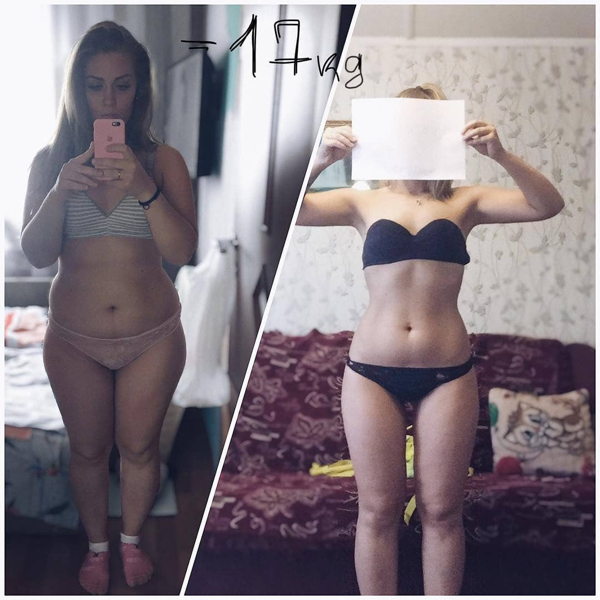
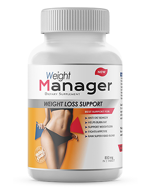
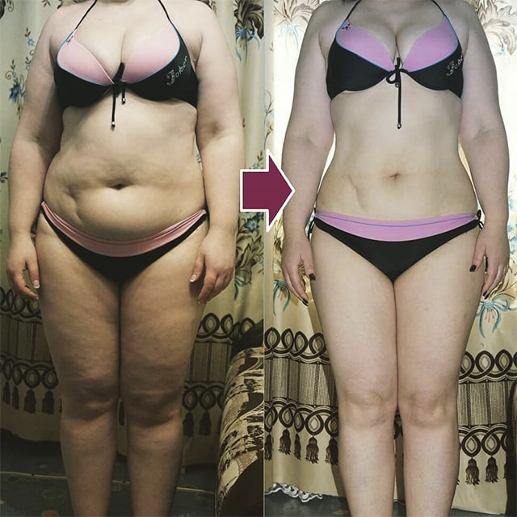
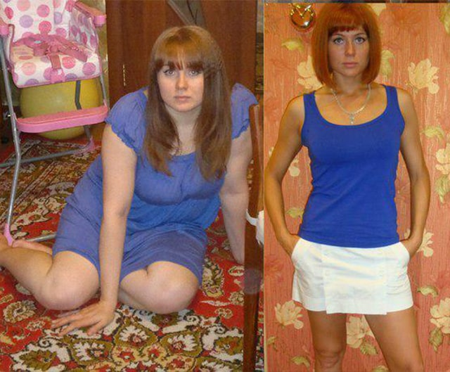
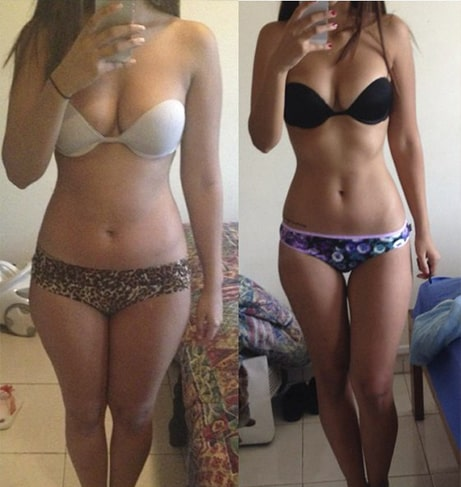
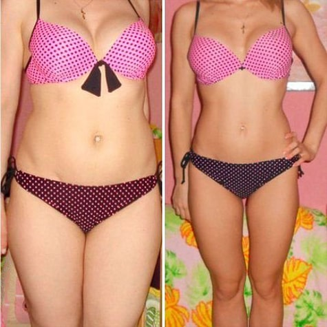

Jak schudłam 26 kg w miesiąc i odmieniłam swoje życie! Osobiste doświadczenia
Wysłane przez , 19:51 | Autor: Natalia
Dziewczyny, jestem szczupła i ładna, mam cudownego męża i dzieci. ALE NIE ZAWSZE TAK BYŁO. Chcę opowiedzieć wam swoją historię, ponieważ wiem, że wiele z was rujnuje sobie życie z tego samego powodu, który i mnie nie dawał spokoju przez kilka długich lat. Jestem pewna, że to pomoże wam zmienić wasze życie, tak jak i mnie pomogło jakiś czas temu.
Kilka miesięcy temu ważyłam 96 kg przy wzroście 167 cm. Moje życie było istnym piekłem! Byłam w ciężkim szoku, gdy w pewnym momencie moja waga zaczęła bez powodu piąć się w górę! Najpierw 60 kg, potem 70, 80, 90... aż wreszcie zatrzymała się na 96 kg i... zaczął się prawdziwy horror...
Czułam się koszmarnie, ledwo mogłam się ruszać. Nie wspominając o tym, jakim obrzydzeniem napawał mnie mój własny widok w lustrze... Chciało mi się płakać, bo nie mogłam uwierzyć, w jakie monstrum się zmieniłam...
Ostatnią kroplą, która przelała czarę goryczy, były słowa mojego męża. Najpierw zaczął mnie ignorować i przestał widzieć we mnie kobietę. A w końcu powiedział: „Nie mogę już tego znieść. Zabieram dzieci i odchodzę”.
Te słowa były dla mnie jak grom z jasnego nieba... Czułam się tak źle, bezużyteczna i niepotrzebna. Im dłużej przyglądałam się swojemu odbiciu w lustrze, tym gorsze miałam samopoczucie. Nie miałam już siły z tym walczyć. Po głowie tłukła mi się tylko jedna myśl... niech to się wreszcie skończy...
Uratował mnie szczęśliwy przypadek. W mediach społecznościowych znajomi dodali bardzo fajną dziewczynę, Martę, która miała przepiękną figurę. Dokładnie taką, o jakiej marzyłam! Marta wyczuła, że mam problem i zaprosiła mnie do grupy, w której ludzie rozmawiali o produkcie odchudzającym – Weight Manager. Przeczytałam opinie i napisałam do dziewczyn, którym udało się schudnąć dzięki Weight Manager, a potem postanowiłam sama go wypróbować.
Najpierw zamówiłam jedno opakowanie i zaczęłam kurację. W tamtym momencie ważyłam 96 kg. Następnego ranka byłam KOMPLETNIE ZSZOKOWANA . Już po pierwszej dawce mój brzuch był widocznie bardziej płaski! Każdego ranka zrywałam się z łóżka, jak dzieciak na wakacjach, żeby zobaczyć, ile ważyłam, a waga pokazywała CORAZ MNIEJ I MNIEJ!
Tydzień później na wadze zobaczyłam 87 kg. Dwa tygodnie później – już tylko 78 kilogramów! A teraz, gdy minął miesiąc, schudłam łącznie 26 kg. A najlepsze jest to, że waga się utrzymuje! KILOGRAMY NIE WRACAJĄ , nawet jak jem dosłownie wszystko. Po prostu nie mogłam w to uwierzyć. Mąż wrócił do mnie i wszystko naprawiliśmy, teraz znów daje mi kwiaty i dba o mnie. A dzieci nie widzą we mnie grubej ciotki, tylko uroczą, elegancką mamę.
Dziewczyny, mnie się udało, więc i wam się uda! Każdy może to zrobić. Ale chcę was strzec: NIE ZWLEKAJCIE Z ODCHUDZANIEM POD ŻADNYM POZOREM! Kiedy zaczęłam tyć, nie byłam świadoma śmiertelnie niebezpiecznych efektów ubocznych nadwagi. Padłam wtedy ofiarą naciągaczy, którzy trąbili o fałszywych dietach oraz firm, oferujących produkty odchudzające – pomogły mi jedynie przytyć jeszcze bardziej. Z każdym tygodniem robiłam się coraz grubsza i wyglądałam coraz starzej. A wszystko to doprowadziło do cukrzycy typu 2... Dobrze, że wybawienie przyszło na czas!
Wasz los jest w waszych rękach! To wy decydujecie, czy staniecie się szczupłymi pięknościami, czy pozostaniecie grube i chore! Uważam, że każda otyła osoba powinna wypróbować tej metody przynajmniej raz. Odkąd produkt wprowadzono na rynek, trudno jest znaleźć ten oryginalny. Dlatego właśnie piszę, żebyście i wy mogły wypróbować i pomóc w tym innym. Koniec końców teraz widzę, jaka jestem szczęśliwa z rodziną i chcę, żeby każdy miał okazję poczuć takie samo szczęście. Dziękuję, że to przeczytaliście!

Zainteresowane osoby informuję, że zamawiałam z tej oficjalnej strony internetowej . To jedyna certyfikowana firma , która sprzedaje Weight Manager . Jeśli chodzi o dowóz, to tu wszystko jest jasne – płatność następuje przy odbiorze na poczcie. Więc nie ma żadnego ryzyka .
Teraz obniżyli cenę Weight Manager , więc spróbujcie skorzystać z promocji!!!
No cóż, mam nadzieję, że to były przydatne informacje i wreszcie uda wam się osiągnąć pożądany rozmiar i wagę, tak szybko jak to możliwe ! Życzę wszystkim powodzenia! Poniżej znajdziecie link do strony oficjalnego producenta.
TUTAJ MACIE LINK, Z KTÓREGO SAMA SKORZYSTAŁAM, ZAMAWIAJĄC ZA 137zł



